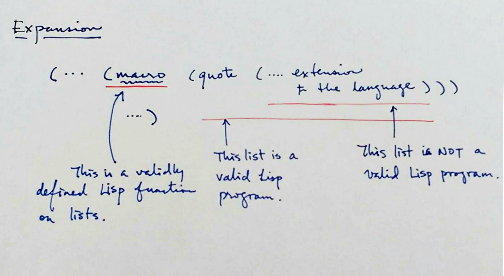
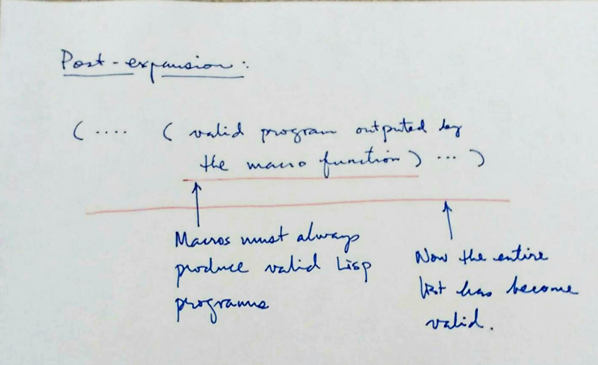
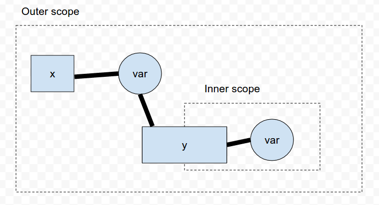

A program is a (nested) list.
Not all lists are valid programs. Only certain type of lists can be interpreted as programs.
Valid: (+ 1 2 (* 3 5))
Invalid: (1 2 +)
Sometimes the validity of a list depends on the dialect of Lisp:
(defun add (a b) (+ a b))
Valid for Common Lisp, but not Racket.
(define (add a b) (+ a b))
Valid for Racket, but not Common Lisp.
The unified representation of programs using a data structure that programs can manipulate, Lisp has a uniquely self-referencial nature that makes it exceedingly powerful (and intellectually challenging).
! Lisp rewrites itself, and it grows by itself.

! During expansion, functions, known as macros, evaluate certain fragments in the program. These fragments are the extensions to the language.

The macro functions converts the entire nested list to a valid Lisp program.
(... (macro (quote (... invalid-list ...))))
gets evaluated to:
(... (... valid-list ...))
Definition: (Atoms)
An atom is a value that can be an element of a list.
Let’s go through the different atoms of the core-clojure langauge.
| Numbers | Example |
|---|---|
| Long numbers | 3.1415 |
| Ratio | 1/3 |
| BigInt | 10000N |
| BigDecimal | 3.1415M |
Simple strings:
"Hello world."
"I say \"Hello\" to the world"
Multiline string:
"Hello,
This is a big world of long
sentences."
\a
Keywords are a staple of Clojure programs. They are quick and efficient way to create constants.
They are similar to the Java enum values.
Keywords have the same rule as variable names (aka symbols), except they must start with :.
:red
:blue
:green
or
:big-red-apple
:blue-sky
:important-field!
Later, we will introduce namespaces. Like symbols, keywords can be specialized by a namespace.
Symbols are variables which are labels referring to some data or function.
! It’s natural to think of Clojure symbols as variables. But Clojure can do more with its symbols than other languages can do with variables.
Clojure has some very relaxed rules in naming symbols:
a ; looks like a variable.
*a* ; can have (almost) any characters except whitespaces
int->float ; good names can be extremely satisfying
java.lang/Integer ; a symbol that has a namespace "java.lang", and name "Integer"
Var s are symbols which represent other expressions
a => 42
(Almost) each time a var appears, it is evaluated to its expression.
Other languages
In other programming languages, one can only access the expression referred by variables.
Lisp
In Lisp, we can (and need) to access (and create) the variable itself using Lisp.
(var a)
Clojure uses other brackets to improve the parentheses overload.
(let ((a 10)
(b 20))
(+ a b))
! Common Lisp
(let [a 10
b 20]
(+ a b))
! Clojure
We will focus on the core Clojure - which is a Turing-complete implementation of Lambda Calculus.
(f <arg> <arg> ...)
Example:
(+ 1 2 3 4)
(/ (+ 1 2 3 4) 4.0)
(fn <alias?> [ <args> ] <body>)
Example:
(fn [a b] (/ (+ a b) 2))
! Computing the average of two numbers.
(fn factorial [n]
(if (< n 2) n (* n (factorial (dec n)))))
! Recursion function that uses an alias factorial for itself. The alias is only valid in the body of the fn defintion.
Symbols are just names, and they can be used to represent anything, such as:
Definition: Symbols Binding
When we associate a symbol to something else, the association is called a binding.

(def <symbol> <expression>)
! Creates a global symbol binding that exists throughout the entire namespace.
More on namespaces later…
Example:
(def PI 3.1415)(def area-of-circle (fn [r] (* r r PI)))(area-of-circle 100)
Must resist the usage of global symbol binding.
Java/C/C++ tend to bind functions to global symbols.
Because functions are values, think of functions as simple as integers. So, Clojure requires minimal global symbol binding.
Use local binding (coming up next) as much as you can.
We want to create new symbol bindings in expressions on-the-fly.
(def two-circles
(+ (* 3.1415 100 100) (* 3.1415 100 100)))
! Let’s create a symbol bindings which are only valid in the inner-expression.
(def PI 3.1415)
(def radius 100)
(def area (* 3.1415 radius radius))
(def two-circles (+ area area))
! Why is it bad?
radiusis not really a universal constant. It’s 100 only for this expression.- same for area.
(...
(let [<symbol> <expression>
<symbol> <expression>
...]
<inner-expression>) ...)
Example:
(def PI 3.1415)
(def two-circle
(let [r 100
area (* PI r r)]
(+ r r)))
! Can you summarize why local symbol binding is more desirable to compute the value of two-circle?